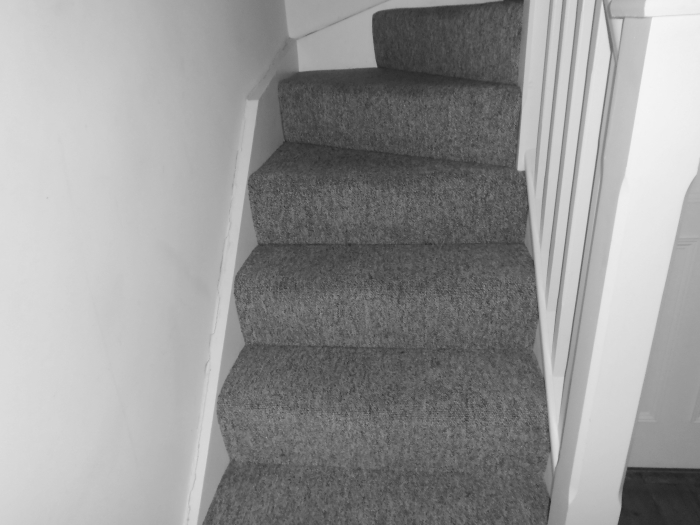

The plot
Throughout his life, John Decker has been obsessed by the moon. Each chapter take its title from one of the lunar seas...
1: Sea of the Edge
Christmas Eve: John Decker falls down the stairs at his isolated New Forest home, breaking both his legs.
Lying in agony, he remembers being a young man in the Yorkshire town of Sketby and the previous time he fractured a leg, while drunkenly celebrating being demobbed from the army. In hospital, the young Decker meets a young nurse, Laura.
The old Decker crawls to the kitchen to get his phone — only to realise he has left it up in the loft while working on his model of the moon. With no other means of contacting the outside world, and no friends or family to care about him, he faces the prospect that he might die without knowing what happened to his wife Laura and daughter Zoe.
2: Sea of Nectar
A desperate Decker contemplates his fate.
While out with his friend Dave, the young Decker meets Laura again and a romance blossoms. He soon meets Laura's boorish brother-in-law, Brian, who seems to have a fixation with her.
3: Sea of Fecundity
Decker makes a pair of splints from and old mop and attempts an agonising ascent of the stairs to get his heart pills.
Laura tells the young Decker that he is to become a father. After Zoe is born, the three of them live with Decker's parents, causing strain on their marriage. Decker finds a dilapadated old home on the edge of Sketby Moor and begins renovating it, but the marital problems continue. He has a fling with Peggy, a woman he meets while working as a TV repairman.
4: Ocean of Storms
After returning from a cycling trip, the young Decker finds Laura and Zoe have gone missing from their moorside home. His policeman pal Dave tries to reassure him but it soon becomes clear that something terrible has happened.
5: Sea of Crises
Laura and Zoe have vanished without trace. Police treat Decker as the main suspect in their murder, but have no evidence to charge him. However, most of Sketby assumes his guilt — he loses his job and is beaten up by a gang of thugs led by Brian. Distraught and disgusted, Decker decides to leave the town.
6: Southern Sea
Decker moves to Bournemouth, where he gets a job as a TV salesman. He buys the business from his boss and builds it up to be a great success, while still campaigning for the case into his wife and daughter's disappearance to be reopened.
7: Sea of Cold
At his father's funeral, Decker meets Dave again and persuades him to provide the case files of other people questioned over Laura and Zoe's abduction. He is given the names of four people — Blakely, Quill, Smyth and Bell.
8: Sea of Serpents
 In a northern seaside town, Decker lures child molester Blakely into a trap and confronts him, only to discover the man is an unlikely culprit.
In London, he follows paedophile Quill and meets Hale, a broken man looking for the people who murdered his young son. During an interrogation, Hale leaves Quill with severe brain damage and then takes his own life.
In a northern seaside town, Decker lures child molester Blakely into a trap and confronts him, only to discover the man is an unlikely culprit.
In London, he follows paedophile Quill and meets Hale, a broken man looking for the people who murdered his young son. During an interrogation, Hale leaves Quill with severe brain damage and then takes his own life.
While looking through a draw of old things, the elderly Decker finds a letter from Hale, warning how his anger and desire for justice may also destroy him.
9: Smyth's Sea
Decker, now middle aged, tries in vain to trap Smyth, a wealthy scholar with a interest in the dark side of life. Smyth gives Decker the name of another suspect — serial offender Fenham.
Meanwhile, Decker begins a romance with Penny, one of his sales staff.
10: Foaming Sea
Decker tracks down Fenham and in a fit of rage beats him to a pulp. He also meets two other suspects: Brian, who has been leading a double life, and Bell, who is dying in a hospice. None of them appear to be involved in Laura and Zoe's disappearance.
Increasingly angry and bitter, his relationship with Penny breaks down.
11: Sea That Has Become Known
Still in agony, and surrounded by memories of the past , Decker finallly realises who killed his wife and daughter. But to prove it, he will have to get out of the house. If he stays, he might die and never see justice.
12: Sea of Showers
Decker begins a tortuous crawl through the New Forest to the nearest road. Just a few hundred yards but it might as well be miles. And then it starts to rain...
13: Sea of Cleverness
Will the killer of Laura and Zoe Decker finally be caught?
14: Sea of Tranquility
Can Decker at last find some kind of peace and happiness?
Timeline
Decker leaves the army and breaks his leg in a drunken celebration. In hospital he meets Laura, a nurse.
On a night out with his pal Dave, Decker meets Laura again and begins a relationship with her.
Decker and Laura are married, and several months later Zoe is born. They live with Decker's parents.
During a walk on Sketby Moor, Decker discovers a dilapadated cottage. He buys the property and begins refurbishing it.
The Deckers move into the cottage though there are still major problems with it. Decker has a brief fling with Peggy Bell.
Laura and Zoe disappear without a trace. Decker is arrested for their murder but not charged. He faces major hostility from the people of Sketby.

Decker moves down to Bournemouth and gets a job as a salesman in a TV and electrical store.
Decker buys the store from his boss and begins building it up to be a success, while still campaigning for the investigation into Laura and Zoe's disappearance to be reopened.
At his father's funeral, Decker persuades his old friend Dave, a policeman, to provide him with the case files of the other suspects in the case. He tracks down Blakely, but discounts him from being the culprit.
In London, Decker pursues Quill and meets Hale, a man who has been similarly bereaved. During an interrogation, Hale leave Quill with severe brain damage.
Decker has temporarily abandoned his quest to find the killer. He buys an isolated house in the New Forest.
Decker begin a relationship with Penny, one of his sales staff. He pursues suspects Smyth and Fenham, and beats up the latter in a fit of rage.
Decker uncovers the secret of his former brother-in-law, Brian, but discounts him as a suspect. His relationship with Penny breaks down.
Decker finds the final suspect, Bell, dying in a hospice. However, the man has an alibi and it seems the killer of Laura and Zoe may never be found.
Decker falls downs the stairs at his home and breaks both his legs. Isolated and in agony, he finally realises the truth. But to see justice, he must crawl...